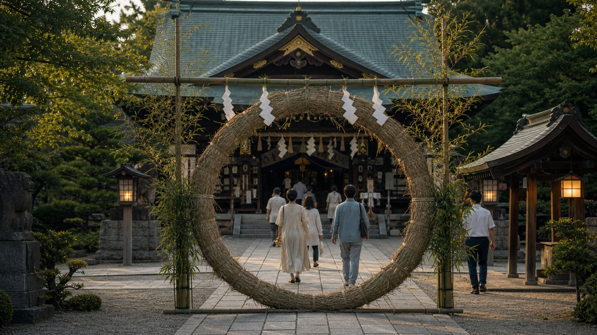

Jizō Bon é uma celebração comunitária associada ao fim de agosto, muito presente em Kyoto e em áreas de Kansai. A data gira em torno de Jizō, figura budista ligada à proteção das crianças e dos viajantes.

Uma data de comunidade
Diferente dos grandes matsuri turísticos, Jizō Bon costuma aparecer em escala de vizinhança: crianças, famílias, pequenos altares, lanternas, doces, brincadeiras e cuidado local.
Por que importa
A data mostra um Japão que nem sempre aparece em roteiro. É a cultura cotidiana da rua, da associação de moradores, da criança que cresce aprendendo o calendário do próprio bairro.
Como perceber
Como muitas celebrações são de bairro, observe com discrição e respeite se não for evento aberto a visitantes.